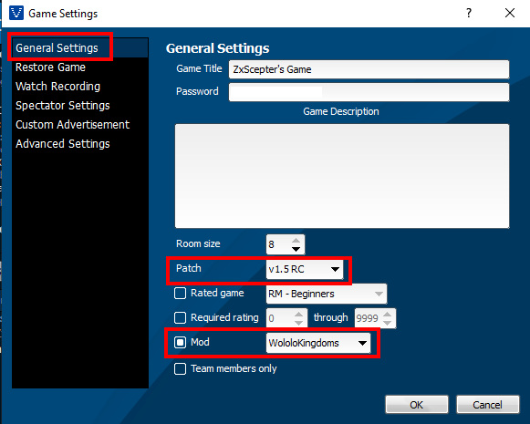
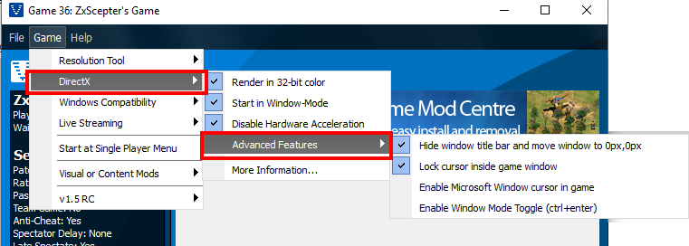
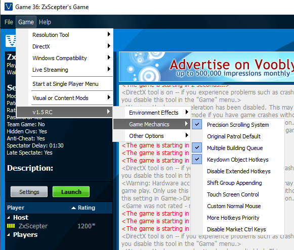
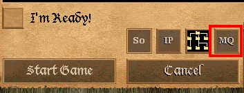

Overview
While the Age of Empires II game works fine on Steam, there are some improvements that
can be done by installing the Wololol Kingdoms. A few examples of these improvements include:
- Gates that can be rotated using the mouse wheel
- More responsive "Patrol" attacking option, thus allowing melee military units to
intelligently target enemies instead of standing idle.
- More intelligent AI, such as Barbarian AI, can only be played on Wololol Kingdoms
- Competitive AoE II is played on Wololol Kingdoms.
Unfortunately, the Wololol Kingdoms mod can only be played on another game client called
Voobly, and installing the mod itself requires a bit of a setup. No fear though! That's
why this guide is here. I will show you how to install Wololol Kingdoms and Voobly!
Wololol Kingdoms - Setup Instructions
Step 1:
Make sure that you have installed Age of Empires II on Steam. After you installed AoE II,
keep Steam open! Do not close the Steam client.
Step 2:
Install the compatibility patch so you can run AoE II on Voobly. Download and install
from the link below. Note that this link is my own Google Drive hosted link, as I
do not trust the current host website that much. Download the file
"Age2HDCompatibilityPatchV5.7z"
When you install the compatibility patch, if an error that says "installation not detected"
pops up, do not worry! Keep going with the installation, and make sure you have the path
to the directory where you installed Age of Empires 2. It is usually where you installed
your Steam, e.g.
Steam\steamapps\common\Age2HD.
For example, my path is "Z:\Steam\steamapps\common\Age2HD"
Step 3:
Download and Install Voobly. Voobly can be found here:
You'll also need to register for a Voobly account.
Step 4:
Install "User Patch 1.5" by clicking on the link below and clicking on "Download Now."
Your browser will ask if Voobly can be opened, which you shoud allow.
Step 5:
Install "WolololKingdoms" by going here and downloading the most recent ".exe" file.
E.g. if the most recent version is 5.8.1, download the file "WololoKingdoms.5.8.1.exe"
After installing WololoKingdoms, run the WololoKingdoms Converter.
Step 5A:
At the WK Updater, ensure that "Checking Permissions" and "Checking Updates" are both
checked. Click "Update."
Step 5B
At the main WololoKingdom Updater screen, you can leave all the default settings alone.
The only setting you have to change is "Choose which hotkeys to use." If you want to
keep your current Steam hotkeys, choose the option "Use current AoC/Voobly hotkeys."
NOTE: Control group custom hotkeys do not currently work on
WololoKingdoms! In other words, control groups can only be set via the default
Ctrl 1 - Ctrl 9, and the control groups can only be accessed via the default 1 - 9.
If you want to make sure your hotkeys work, go into
"Steam\steamapps\common\Age2HD\profiles"
and copy "player0.hki". After that, go back
into "Steam\steamapps\common\Age2HD" and
paste in "player0.hki". Change the name of the
newly pasted "player0.hki" file to
"player1.hki"
Click "Run" once you finish setting up everything.
Step 6
Now we'll set up some Voobly settings.
Step 6A:
After you open up Voobly, go to
File →
Game Browser. In the newly opened Game Browser
window, under Age of Empires II: The Conquerors,
double click on New Player Lobby. Install any
additional programs that Voobly requires. Once the New Player Lobby opens, if Voobly
asks your permission to install any additional files, allow it to. Don't worry,
this is completely safe!
Step 6B:
Now, host a sample game and see if you can run WololoKingdoms. To do that, go Into
the New Player Lobby, click on
File →
Host Game. After the hosted game pops up,
click on
Settings, and make sure it is
identical to the following image:

Click "OK" once you are finished.
Step 6C:
Now we are going to setup some resolution settings. Follow the images below:


Step 7:
If you set up everything correctly, the game should launch! In the game room, press the
green "Launch" button. Once the game launches, make sure you change from "SQ" (Single
Queue) to "MQ" (Multiple Queue). This means that if you have MQ and you select multiple
military buildings, such as Stables, and build 10 knights, the 10 knights will be
evenly divided for the selected Stables.

You're done! Enjoy WololoKingdoms :) Make sure to support all the developers involved,
including WololoKingdoms developers, UserPatch Developers, Compatibility patch developers,
and Voobly developers!